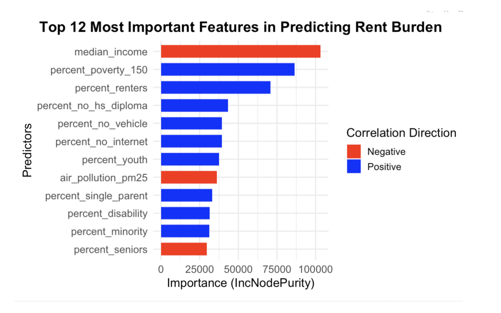

In the New York Metropolitan area, the cost of housing has become prohibitively expensive for a large segment of the population, leading to displacement, homelessness, financial strain, and preventing families from being able to save. This issue is especially acute for renters, who are often in lower income brackets with less financial stability. The “cost burden” or “rent burden” is a critical metric to evaluate how expensive rent is by calculating monthly rent as the percentage of household income. Generally, a household is considered rent burdened if it spends more than 30% of its income on rent; a household that spends over 50% on rent is severely rent burdened. In a housing market context, we assume that individuals will maximize their utility – choosing housing options that will best fit their needs and financial means. However, when market forces and structural barriers limit affordable choices, many households find themselves forced into unsustainable rent burdens. This project seeks to answer the question “why does rent burden vary across different neighborhoods in the New York Metropolitan area, and what demographic, environmental, and economic factors explain these differences?”
The first thing that I did was map out rent burden.
Since the goal of this project was to evaluate which features are the most important, we took a maximalist approach to adding features to the dataset. The final dataset included 4712 census tracts and 402 rows of data. After filtering the census tracts that had low data resolution (more than 30% of rows were NA), there were 4601 rows. This project considered two models: a linear model and a random forest. The linear model establishes a benchmark for understanding which factors might be correlated with rent burden, but it cannot be considered on its own because many of these features are correlated with each other. The results of the RF model yielded some interesting insights about the data. Firstly, the importance of median income in a neighborhood, percentage of people living in poverty, youth, and other demographic variables that usually indicate social vulnerability were important features in the model. This suggests that rent burden is concentrated in lower-income areas, where financial constraints leave households with fewer affordable housing options. High housing costs disproportionately impact low-income communities and reinforce cyclical affordability challenges. The second, more unexpected finding, is the significance of some environmental factors, specifically air pollution (PM_25) and polluted water, in predicting rent burden. While random forest does not inherently reveal causation, external correlation analysis shows a negative relationship between PM2.5 exposure and rent burden. This might suggest that households are willing to take on higher rent burdens in exchange for improved environmental conditions, choosing neighborhoods with better air and water quality despite financial strain. This could indicate that environmental quality plays a role in perceived livability and housing demand, an area that warrants further investigation.

GIS, R (for statistical analysis and regression), and HTML/CSS for documentation.
Tech Stack